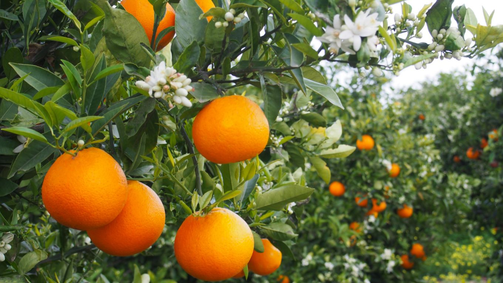
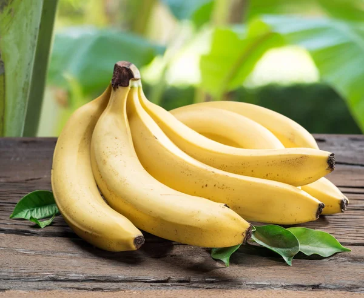
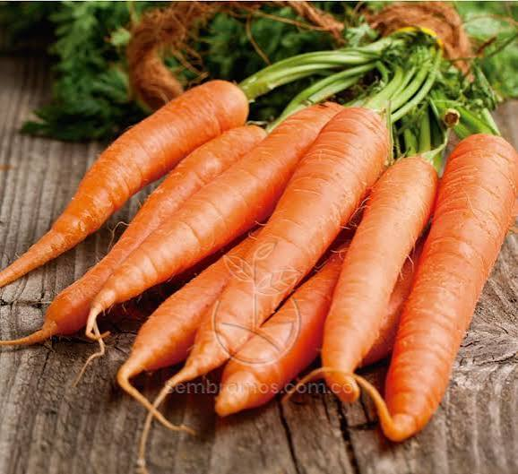
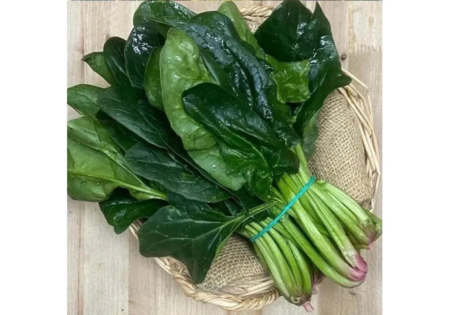
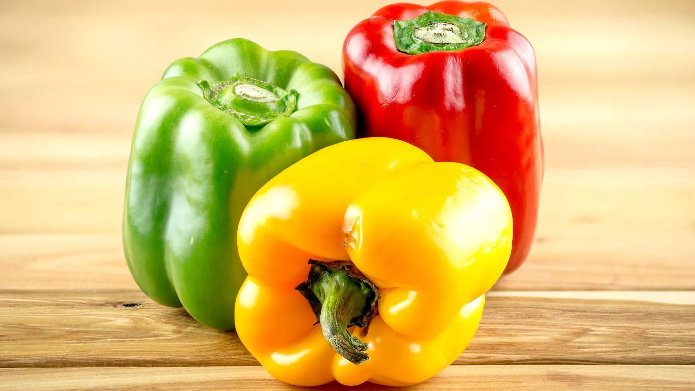
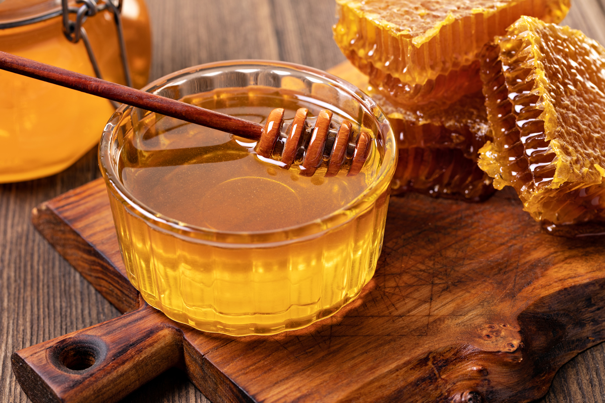
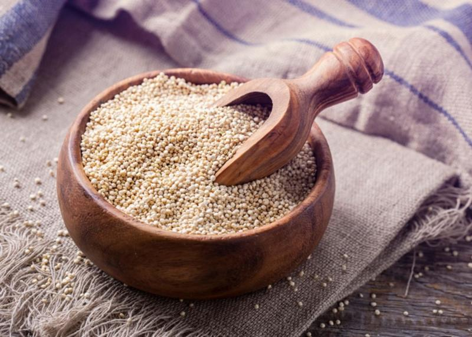
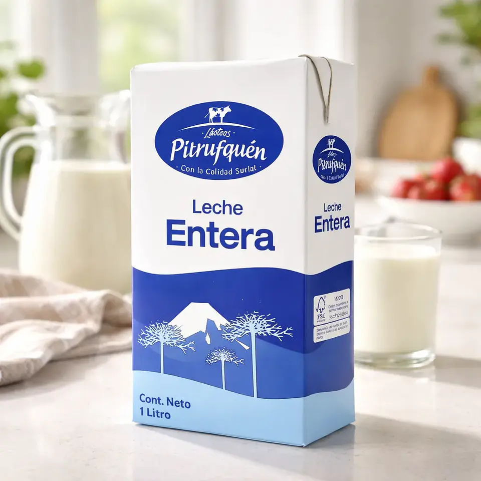

Manzanas Fuji
Manzanas crujientes y dulces, cultivadas en el Valle del Maule.
$1.200 por kilo
Ver producto

Naranjas Valencia
Naranjas jugosas y ricas en vitamina C, ideales para zumos.
$1.000 por kilo
Ver producto

Plátanos Cavendish
Plátanos maduros y dulces, perfectos para el desayuno
o como snack.
$800 por kilo
Ver producto

Zanahorias Orgánicas
Zanahorias crujientes cultivadas sin pesticidas
en la Región de O'Higgins.
$900 por kilo
Ver producto

Espinacas Frescas
Espinacas frescas y nutritivas, ideales para ensaladas
y batidos verdes.
$700 por bolsa de 500g
Ver producto

Pimientos Tricolores
Pimientos rojos, amarillos y verdes, ideales para
salteados y platos coloridos.
$1.500 por kilo
Ver producto

Miel Orgánica
Miel pura y orgánica producida por apicultores locales.
$5.000 por frasco de 500g
Ver producto

Quinua Orgánica
Producto orgánico ideal para complementar
una alimentación saludable.
$3.500 CLP por bolsa de 500g
Ver producto

Leche Entera
Producto lácteo fresco proveniente de granjas locales.
$1.200 CLP por litro
Ver producto